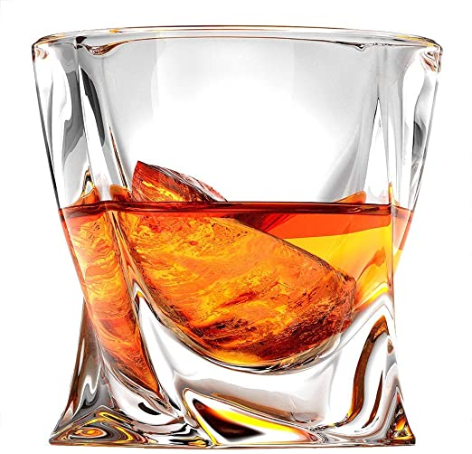

Jestes WHISKY

Ogolnie no whisky jest bardzo dobre
Normalni ludzie pija ja z lodem, niekotrzy niestety z cola (a czasem nawet ze spritem fu)
Whisky ma oryginalny, intensywny smak, jest eleganckie, ale tez mozna sie upic jak ktos chce
Nie ma wstydu podac nawet na jakis oficjalnych meetingach, ale duzo ludzi nie lubi intensywnosci (lub zal im hajsu)
Jestes pewna siebie, oryginalna osoba, nie dajesz sobie wejsc na leb
Potrafisz byc elastyczny w wielu sytuacjach, ale wolisz jak jest po twojemu
Mimo to ludzie czasem uwazaja, ze powinienes byc bardziej stonowany
ale nie maja racji, badz soba i wyjdzie ci to na dobre